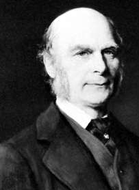
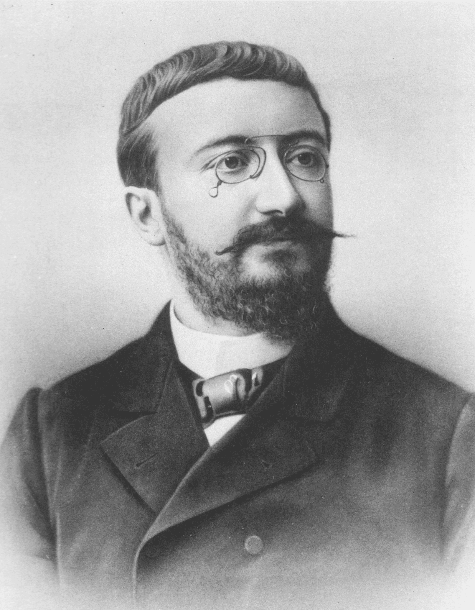
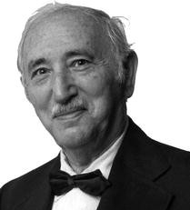

Psychologists and their obsession with the Human Brain
There was lots of contributors to the modern day IQ tests, let's take a look at them.
Pyschologists and the Cult of Intelligence:
Robert Yerks: WWI
There was major research done during the first world war for standardizing
tests for recruiting soldiers, because it ensured that the soldiers were quick
to follow orders and it times could make rational decisions faster. A major contribution
to this standardization of tests was done by
Robert Yerkes.
In 1975 with he carried out tests for over 1.75 million americans and grouped them
based on their rational thinking skills. The criteria for getting selected inside the army
was that appliants who had at least the grade "C" were recruited inside the army.
However these tests ultimately failed since there were lots of
incidents
of racial and national discrimination and this ultimately failed to bring
any standard to tests that were taken.
Francis Galton and Behavioral Genetics
Francis Galton was a lot of things that you can check on his
wikipedia.

However his major contributions were in the fields of behavioral genetics.
He was a differential psychologist and led early experimental studies in the
field of genetic variation in behavioral traits carrying out experiments with
the tools that he built and are now the foundation for behavoiral
genetics. The works of this genius have helped modern psychology in a
lot of ways, such as use of the bell-curve for calculating the differences
in heridetary traits and such. There are some really significant contributions
that can be explored in
depth
in his theories.
Alfred Binet: The First standard IQ test

Alfred Binet was a French psyhchologist who along with Théodore Simon
was created the first ever standard IQ test, called the Binet-Simon test.
They were asked by the French Ministry to check whether the students were
learning from French schools and check for their performance. These tests
classified students based on their mental age, with tasks increasing in difficulty
as the tests progressed. However, even Binet clarified that the intelligence of
as a phenomenon which is varied across multiple factors which can't be all put together
into one test.
David Wechsler: The First IQ Test

David Wechsler was again a psychologist who advocated the first ever
standard IQ test, called the Wechsler Adult Intelligence Scale (WAIS)
in 1939. David challenged the Binet-Simon test, stating the objective of the test was
single core instead of multi-core. When the Binet-IQ test was released, he again cited it to
be non-satisfactory, because his philosophy of intelligence was different that that of Binet.
The tests produced results which were meant to be dealing with intelligence and
cognitive ability of adolescents. These tests were initially designed by Wechsler
for his patients, but eventually were accpeted as a global standard for IQ tests.